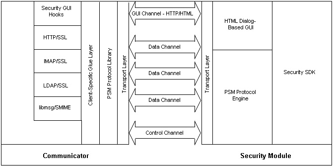

|
Personal Security Manager ArchitectureNewsgroup: netscape.public.mozilla.cryptoTechnical contact: Mark Welch Yell at the manager: Bob Lord Personal Security Manager (PSM) is a client-independent desktop security module. It performs PKI operations on behalf of desktop client applications, including certificate and key management, SSL, S/MIME, cryptographic token support, and centralized administration. PSM ComponentsThe PSM suite consists of two major pieces: the PSM daemon itself and the PSM client library. PSM itself is a daemon, running in a separate process. Applications use PSM functionality by calling the PSM client library, which communicates with PSM using an RPC-like protocol over a local socket connection.

The PSM DaemonPSM itself is a daemon, running in a separate process. It performs cryptographic operations, wraps client network traffic using SSL, and performs many other kinds of PKI operations.The PSM Client LibraryIn order to use PSM, a client application must link with the PSM client library. This library consists of several layers:The Transport LayerThis layer provides a reliable transport stream abstraction for connection to PSM. The properties of the connection are:
The transport layer is provided by the client application on a platform-dependent basis:
The Protocol LibraryThe protocol library encodes and decodes messages passed along the control channel. The protocol library is shared between the client library and the PSM daemon.The Client Library API The client library API manages connections to PSM, and provides client-side abstractions for objects and services contained within PSM. Eventually, this API will grow to resemble a subset of the NSS API, with higher-level functions and UI facilities added for ease of integration. The PSM GUIPSM may require user input to perform certain operations. The application may choose from one of two methods for dealing with these exceptional conditions. The application may allow PSM to use its own built-in HTML dialog-based GUI, which is similar to the security UI curently implemented in Communicator. The other option [currently not implemented] is for PSM to send messages back to the application requesting the information required to continue.When PSM requires user feedback and it is configured to use the internal HTML dialog-based GUI, the following process is used to display the dialog and get back the results:
The PSM ProtocolThe application communicates with PSM using an RPC-like protocol over a control channel. In addition to this control channel, there may be several data channels in use to pass bulk data to and from PSM.When the application starts up, or (in the case of Mozilla) when the https module is loaded for the first time, it initializes the PSM client library. The client library will start PSM if it is not already running, and then open a control channel to it. Each application will have its own control channel to PSM and will require separate authentication for access to the resources controlled by PSM. PSM will [eventually] be able to support a large number of applications at one time, though at the moment, only one at a time is supported. (There is some infrastructure within PSM itself to support multiple clients; as NSS exposes multi-client functionality, PSM will follow suit.) In addition to the control channel, several data channels may be in use by a particular application at any one time. These data channels will be used for bulk data transfer, such as SSL connections, operations on cryptographic messages (PKCS #7 and S/MIME), or any other operation that requires transfer of a large amount of data to PSM. The PSM protocol is described in detail in another document [forthcoming]. In brief, it supports the following types of operations:
|
|
|
Copyright © 1998-2000 The Mozilla Organization.
Last modified February 11, 2000. |
|